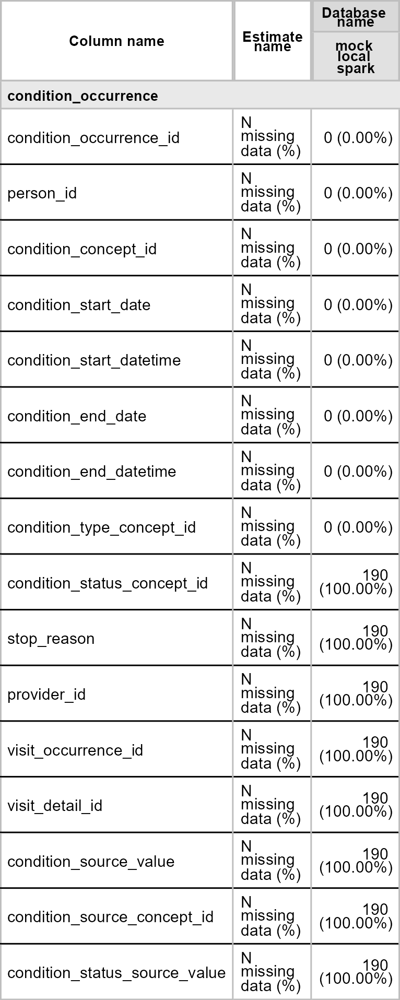

OmopSparkConnector provides a Spark specific implementation of an OMOP CDM reference as defined by the omopgenerics R package.
Installation
You can install the development version of OmopSparkConnector from GitHub with:
# install.packages("devtools")
devtools::install_github("oxford-pharmacoepi/OmopSparkConnector")Creating a cdm reference using Sparklyr
Let’s first load the R libraries.
To work with OmopSparkConnector, we will first need to create a connection to our data using the sparklyr. In the example below, we have a schema called “omop” that contains all the OMOP CDM tables and then we have another schema where we can write results during the course of a study. We also set a write prefix so that all the tables we write start with this (which makes it easy to clean up afterwards and avoid any name conflicts with other users).
con <- sparklyr::spark_connect(.....)
cdm <- cdmFromSpark(con,
cdmSchema = "omop",
writeSchema = "results",
writePrefix = "study_1_"
)For this introduction we’ll use a mock cdm where we have a small synthetic dataset in a local spark database.
cdm <- mockSparkCdm(path = file.path(tempdir(), "temp_spark"))
#> ! Validation has been turned off, this is not recommended as analytical
#> packages assumed the cdm_reference object fulfills the cdm validation
#> criteria.
#> ! Validation has been turned off, this is not recommended as analytical
#> packages assumed the cdm_reference object fulfills the cdm validation
#> criteria.Cross platform support
With our cdm reference created, we now a single object in R that represents our OMOP CDM data.
cdm
#>
#> ── # OMOP CDM reference (sparklyr) of mock local spark ─────────────────────────
#> • omop tables: cdm_source, concept, concept_ancestor, concept_relationship,
#> concept_synonym, condition_occurrence, drug_strength, observation_period,
#> person, vocabulary
#> • cohort tables: -
#> • achilles tables: -
#> • other tables: -This object contains references to each of our tables
cdm$person |>
dplyr::glimpse()
#> Rows: ??
#> Columns: 18
#> Database: spark_connection
#> $ person_id <int> 1, 2, 3, 4, 5, 6, 7, 8, 9, 10
#> $ gender_concept_id <int> 8507, 8532, 8532, 8507, 8507, 8507, 8507, …
#> $ year_of_birth <int> 1960, 1969, 1976, 1981, 1987, 1953, 1999, …
#> $ month_of_birth <int> 6, 3, 11, 3, 12, 10, 5, 12, 10, 4
#> $ day_of_birth <int> 24, 7, 12, 2, 26, 31, 29, 10, 17, 25
#> $ race_concept_id <int> NA, NA, NA, NA, NA, NA, NA, NA, NA, NA
#> $ ethnicity_concept_id <int> NA, NA, NA, NA, NA, NA, NA, NA, NA, NA
#> $ birth_datetime <dttm> 1970-01-01 01:00:00, 1970-01-01 01:00:00, …
#> $ location_id <int> NA, NA, NA, NA, NA, NA, NA, NA, NA, NA
#> $ provider_id <int> NA, NA, NA, NA, NA, NA, NA, NA, NA, NA
#> $ care_site_id <int> NA, NA, NA, NA, NA, NA, NA, NA, NA, NA
#> $ person_source_value <chr> NA, NA, NA, NA, NA, NA, NA, NA, NA, NA
#> $ gender_source_value <chr> NA, NA, NA, NA, NA, NA, NA, NA, NA, NA
#> $ gender_source_concept_id <int> NA, NA, NA, NA, NA, NA, NA, NA, NA, NA
#> $ race_source_value <chr> NA, NA, NA, NA, NA, NA, NA, NA, NA, NA
#> $ race_source_concept_id <int> NA, NA, NA, NA, NA, NA, NA, NA, NA, NA
#> $ ethnicity_source_value <chr> NA, NA, NA, NA, NA, NA, NA, NA, NA, NA
#> $ ethnicity_source_concept_id <int> NA, NA, NA, NA, NA, NA, NA, NA, NA, NA
cdm$observation_period |>
dplyr::glimpse()
#> Rows: ??
#> Columns: 5
#> Database: spark_connection
#> $ observation_period_id <int> 1, 2, 3, 4, 5, 6, 7, 8, 9, 10
#> $ person_id <int> 1, 2, 3, 4, 5, 6, 7, 8, 9, 10
#> $ observation_period_start_date <date> 1990-05-26, 1980-12-06, 2004-02-22, 2017…
#> $ observation_period_end_date <date> 2009-03-08, 1981-08-30, 2006-01-11, 2018…
#> $ period_type_concept_id <int> NA, NA, NA, NA, NA, NA, NA, NA, NA, NAWith this we can use familiar dplyr code . For example, we can quickly get a count of our person table.
cdm$person |>
tally()
#> # Source: SQL [?? x 1]
#> # Database: spark_connection
#> n
#> <dbl>
#> 1 10Behind the scenes, the dbplyr R package is translating this to SQL.
cdm$person |>
tally() |>
show_query()
#> <SQL>
#> SELECT COUNT(*) AS `n`
#> FROM omop.personWe can also make use of various existing packages that work with a cdm reference using this approach. For example, we can extract a summary of missing data in our condition occurrence table using the OmopSketch package.
library(OmopSketch)
library(flextable)
missing_condition_data <- OmopSketch::summariseMissingData(cdm, "condition_occurrence")
tableMissingData(missing_condition_data, type = "flextable")
Native spark support
As well as making use of packages that provide cross-platform functionality with the cdm reference such as OmopSketch, because OmopSparkConnector is built on top of the sparklyr package we can also make use of native spark queries. For example we can compute summary statistics on one of our cdm tables using spark functions.
cdm$person |>
sdf_describe(cols = c(
"gender_concept_id",
"year_of_birth",
"month_of_birth",
"day_of_birth"
))
#> # Source: table<`sparklyr_tmp_08565f48_368a_4fd3_996d_6ce84d0937eb`> [?? x 5]
#> # Database: spark_connection
#> summary gender_concept_id year_of_birth month_of_birth day_of_birth
#> <chr> <chr> <chr> <chr> <chr>
#> 1 count 10 10 10 10
#> 2 mean 8519.5 1974.7 7.6 18.3
#> 3 stddev 13.176156917368234 15.867857098199766 3.7475918193480524 10.089047967…
#> 4 min 8507 1953 3 2
#> 5 max 8532 1999 12 31With this we are hopefully achieving the best of both worlds. On the one hand we can participate in network studies where code has been written in such a way to work across database platforms. And then on the other we are able to go beyond this approach, writing bespoke code that makes use of Spark-specific functionality.
Disconnecting from your spark connection
We can disconnect from our spark connection like so
cdmDisconnect(cdm)